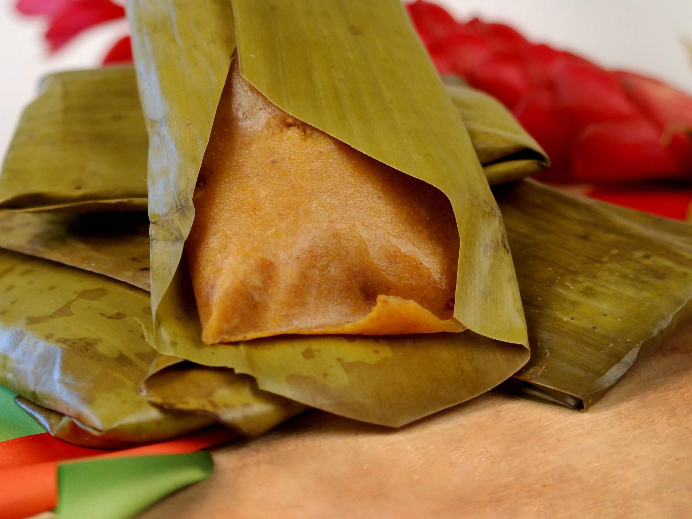

Conkie

Description
Conkies are a traditional treat for many Barbadians.
They are usually made during the month of November as part of the independence celebration.
They are different variations which households creat in Barbados, for example whether raisins are included.
Ingredients
- 2 cups corn flour
- ½ cup plain flour
- 1 cup grated coconut
- ¾ lb grated pumpkin
- ½ lb grated sweet potato
- 6 oz melted butter or margarine
- 1 cup whole milk
- 1 egg (beaten)
- ¾ lb brown sugar
- 4 ozs. raisins
- 1 tsp spice
- 1 tsp almond essence
- 1 tsp grated nutmeg
- 1 tsp salt
- Fresh Banana leaves
Steps
- Mix the coconut, pumpkin, sweet potato, sugar, spices, raisins, flour, corn flour, and salt together in a large bowl.
- Add the beaten egg, melted butter/margarine, and milk.
- Mix thoroughly by hand to combine.
- You should have a thick mixture that drops slowly from a spoon.
- Add more flour if the mixture is not thick enough
- Add a bit more milk if it is too thick.
- Strip leaves from stalk with a sharp knife then briefly singe them over an open flame to make them more pliable.
- Cut the leaves into individual 8" squares.
- Spoon 2 to 3 tablespoons of the mixture into the centre of the banana leaf.
- Fold the leaf around the mixture
- Take care not to rip the leaf.
- Steam the conkies on a rack over boiling water in a large saucepan for 1 hour or until they are firm.
- Unwrap and enjoy!